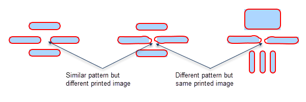

The Calibre® SONR™ product combines multiple related machine-learning
operations under a single license. The operations use feature vectors,
which have been shown to correlate well with actual fabrication
results. Layout shapes with similar feature vectors behave similarly
in the fab.
What differentiates Calibre SONR from Calibre
® Pattern
Matching is the ability to incorporate process information such
as optical models and simulated contours. This can generate insight into
why some designs yield better than others.
